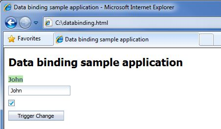
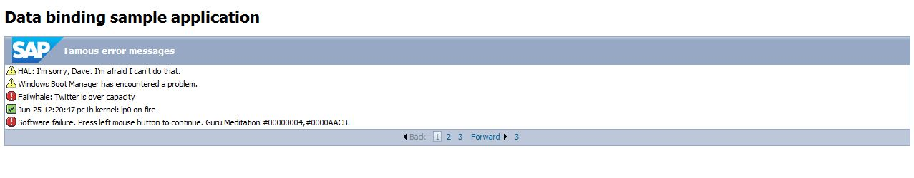

Getting Started
This chapter gives an overview of how to use data binding in conjunction with SAPUI5 controls in a simple application. It provides information about binding data to a property of a control (property binding) as well as binding a collection of values (aggregation/list binding).
It is very simple to use data binding in your application; just perform the the following steps:
- Decide which model you want to use. Depending on the service or backend type, you may want to choose a different model that supports your backend. Currently, there are model implementations for JSON, XML format, and OData services. It is also possible to implement your own implementation if there is no suitable model for your backend.
- Create a model instance.
- Create a control instance.
- Bind properties or lists of the control to your model.
- Unbind properties if you wish.
In the following example, we make use of the already available JSON model, which means that the data must be provided in JSON format. This model is not specific to a particular backend type or implementation. The only requirement is that the data for the model is provided in JSON format.
The JSON model supports two-way/bidirectional data binding by default, which means that the model will automatically reflect changes to the view and vice versa.
Defining the Data
You start by creating a simple HTML page and loading the SAPUI5 runtime. The next step is to create the data you want to bind to a control property later on. As we are using the JSON model, you need to provide this data in JSON format. Place the code into your sample page:
// JSON sample data var data = { firstName: "John", lastName: "Doe", birthday: {day:01,month:05,year:1982}, address:[{city:"Heidelberg"}], enabled: true };
Creating a Data Binding Model Instance
Now you create a new JSON data model and add the data you have created to the model, so that the data is stored there and can be used for binding. Finally, you attach the model to the SAPUI5 core so that it can be used by various controls. It is also possible to attach the model to a specific control by calling oElement.setModel(oModel).
// create JSON model instance var oModel = new sap.ui.model.json.JSONModel(); // set the data for the model oModel.setData(data); // set the model to the core sap.ui.getCore().setModel(oModel);
Creating controls and property binding
At this point you can create the SAPUI5 controls and define the binding to the properties. In the sample, you first define a TextView control and a TextField control. Both controls should display the firstName property of the model. The corresponding control properties have to be bound to the model property. You do this directly in the control constructor by using {} braces and specifying the path to the property in the model. You do this for both controls.
// create your controls var oTextView = new sap.ui.commons.TextView("textView", { // bind text property of textview to firstName property in the model text: "{/firstName}", tooltip: "First Name" }); var oTxt = new sap.ui.commons.TextField("txtField", { // bind text property of textfield to firstName property in the model value: "{/firstName}" });
Next you create a CheckBox control and bind its checked property to the enabled property in the model. You also do this for the previously created TextField by using an alternative binding notation:
// create your controls var oChkBx = new sap.ui.commons.CheckBox("box", { // bind checked property against enabled property in the model checked: "{/enabled}", change: handleCheckBoxChange }); // generic bind method bindProperty(control property, model property) oTxt.bindProperty("enabled", "/enabled"); function handleCheckBoxChange(oEvent){ var bEnabled = oEvent.getParameter("checked"); // modify the enabled property value in the model to reflect changes oModel.setData({enabled: bEnabled}, true); // true means merge the data instead of replacing };
The handleCheckBoxChange method sets the enabled property in the model, depending on the current checked state of the CheckBox.
Finally, you create a Button and define the update method for updating the firstName value in the model with the value of the TextField when the button is clicked.
// create your controls var oBtn = new sap.ui.commons.Button({ id: "btn", text: "Trigger Change", press: update }); function update(){ // modify the firstName property value in the model to reflect changes oModel.setData({firstName: sap.ui.getCore().byId("txtField").getValue()}, true); };
Now, when you open the sample application in the Web browser, you can see that the value of the firstName property is already displayed in the TextView and TextField. When you select the CheckBox, the enabled value is modified in the model (by the handleCheckBoxChange method), and the changes are immediately reflected in all control properties that are bound to this property. In this case, the TextField is enabled or disabled.
As described above, clicking the button modifies the firstName value in the model with the value of the TextView. When this happens, all control properties bound to this model field are updated immediately to reflect the changes (direction Model → View).
Additionally, since the JSON model supports two-way binding, entering a text value into the TextField will also update the corresponding value in the model, and the TextView will display the changes because it is bound to the same property (direction Model ← View).
The page should look like this:

Aggregation Data Binding in a Simple Application
The above sample covers the binding of single properties to a control property. Now we want to focus on binding a collection of values, for example, binding multiple rows into a table, the values for a ListBox, or the items in a ComboBox.
In this example we use the RowRepeater control and bind it to a collection of data. Again, you start with the definition of data and set it to the model and the model to the core.
//create test data var dataObject = { data : [{index:0, level: "Warning", description: "HAL: I'm sorry, Dave. I'm afraid I can't do that."}, {index:1, level: "Warning", description: "Windows Boot Manager has encountered a problem."}, {index:2, level: "Error", description: "Failwhale: Twitter is over capacity"}, {index:3, level: "Success", description: "Jun 25 12:20:47 pc1h kernel: lp0 on fire"}, {index:4, level: "Error", description: "Software failure. Press left mouse button to continue. Guru Meditation #00000004,#0000AACB."}, {index:5, level: "Error", description: "[root@localhost root]# Kernel Panic"}, {index:6, level: "Error", description: "That does not compute."}, {index:7, level: "Warning", description: "404 File not found. Stop messing with the URL."}, {index:8, level: "Success", description: "Blue Screen of Death."}, }; //create JSON model var oModel = new sap.ui.model.json.JSONModel(); oModel.setData(dataObject); sap.ui.getCore().setModel(oModel);
The next step covers the creation of the controls and the definition of a single Message control, which will be used as a template for all items in the RowRepeater. The Message control will hold the corresponding level and description values from the model so that these properties are bound to the model:
//create the template control that will be repeated and will display the data var oRowTemplate = new sap.ui.commons.Message("rowTemplate", { text : "{description}", type : "{level}" });
Once the template is defined, you create the RowRepeater control. The RowRepeater has an aggregation rows, which can be any SAPUI5 control. In our case, this is the abovementioned Message control. You create an aggregation or list binding for this rows property. To do this, you specify the name of the array in the JSON model that contains the actual data (path) and also specify the Message row template:
//create the RowRepeater control var oRowRepeater = new sap.ui.commons.RowRepeater("rowRepeater", { design : "Standard", numberOfRows : 5, currentPage : 1, title : oTitle, // bind row aggregation rows : {path : "/data", template : oRowTemplate} });
The SAPUI5 runtime clones the row template for each entry in the JSON array for the data property and also binds the description and level properties for each message item.
If you start the sample page it will look similar to this: 
For more information, see Usage of Data Binding in Applications, which tells you how to enable data binding in controls.